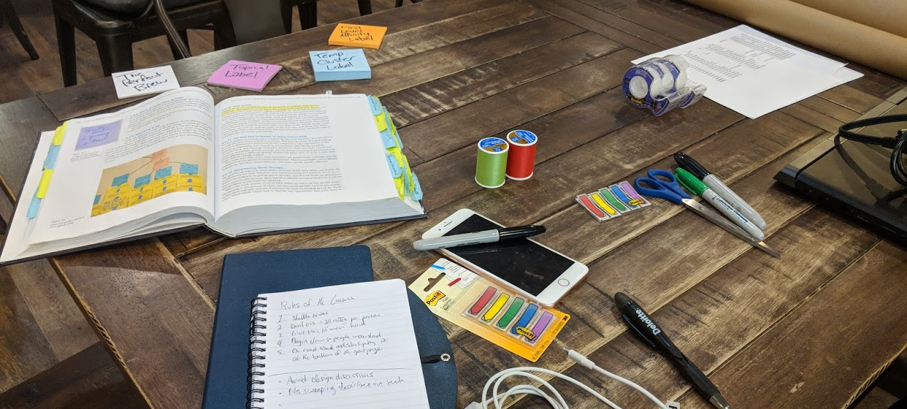

Guidelines are not laws. Plan for the project, not by the book.
Carrying off from our interviews, it was finally time to begin the highly anticipated building of the work activity affinity diagram (WAAD) with the team. This is used to organize large amounts of work activity notes into a structure that “yields sense, affords visualization of the user’s work and, eventually, suggests ideas for designs to support it.” - The UX Book.
To start preparation for our WAAD building night, I printed out all six hundred work activity notes derived from the nineteen conducted interviews at a local Fedex. To my dismay and eventual madness, the paper cutter at the location could only serve its created purpose two pieces of paper at a time. Furthermore, the cutter was dull. This ended up compromising around ten to fifteen work activity notes.
I ended up using scissors
On a quick side note in regards to experience design. This process became less painful when I organized items into stacks of two apart from each other. By giving myself a progress indicator, this slow “system” became much more bearable.
 Before vs. After
Before vs. After
After about two hours of hand-cutting the papers, I stopped by walmart to pick up tape, scissors, post-it notes, and sticky flag notes. Finally, at around 9:30pm after the cafe had closed, I set up a workshop table with all necessary items for the WAAD building process.
By 10:00pm, our full team assembled including our systems engineer (Austin), developer (Tim), visual designer (Jenny), barista (Jazzii), and a guest who wasn’t worth remembering (just kidding, we love you Matt). I wanted to ensure we had our full stack of core team members for the WAAD session as it is an excellent way to sync on user needs, provide physical visualization and interaction to what will eventually become requirements, and build cross-functional team relationships. Before officially beginning the session, I explained the rules of the game and shuffled out around twenty work activity notes per person. The team then took turns reading their work activity note before taping it onto the board (I learned gift wrapping tape folded up works awesome for this). After two rounds of reading and placing the notes one by one, small clusters of similar work activity notes began to form. I paused the session, and explained the usage of temporary topical labels which we used blue sticky notes for. From this point onwards, I transitioned the session into a free for all as the team members were more comfortable with the WAAD rules. As the WAAD began to populate and grow, I stepped in and paused the session to have the team regroup, observe our existing clusters, rearrange work activity notes, and have discussions. With time the temporary topical labels were substituted with purple sticky notes representing affinity labels once real affinity groups were agreed upon by the team.
 The initial setup
Despite the initial success of the WAAD session, problems began to bubble up due to the planning of the event. Only two hours in and the clock had already reached midnight; our team members were getting tired despite the coffee, and the absurd amount of work activity notes did little to resolve any concerns. A good portion of the data was repetitive despite coming from different users; although weighing certain affinity groups can show relevance when prioritizing requirements, we were reaching our upper limits of patience. I asked Matt to order pizza to let us take a quick break and regroup.
Matt ordered the pizza to the wrong address, so it got delayed. Thanks, Matt.
By the time we had finished the pizza, I realized it would be impossible for us to fully complete the WAAD building with all six hundred work activity notes before dawn. I made the decision to work with the existing items on the board, and we began mapping relationships between the affinity labels using blue painter tape.
At the end of the activity, we had successfully identified key user needs. However, the process itself was flawed from a management perspective which I take full responsibility for. WAAD sessions are meant to encompass one to two days worth of work to account for the large amount of work activity notes. They are also meant for projects that are fundamentally complex. In execution, the inner workings of the WAAD was a success, but in application it was a fumble. Given the fact that our team members are volunteering their time and do not have full days available, a WAAD should have immediately been considered as impractical. Furthermore, WAAD’s are supposed to be semi-permanent fixtures that project members can “walk” around. As we have no official “office,” creating a WAAD would only serve a fraction of its real purpose. If I had the opportunity to do this process again, I would abbreviate the steps and filter the original work activity notes more to avoid too many carbon copies that feel more like negative space than actual content. Furthermore, Dr. Hartson suggests that experienced practitioners that are skilled at this can create clusters of all the work activity notes on their own without a hierarchical abstraction of the different categories.
Moving forwards, we will be transitioning what we gathered from the WAAD into system requirements. I’m also going to be putting more of my focus into the management of the progress and less on rigidly following textbook steps. Guidelines are not laws. Plan for the project, not by the book. Ironically enough, the UX Book itself has the following quote on being a smart UX practitioner.
Use goal-directed choices for process and techniques. It is not about which process or method is best but which works best under a given constraint in a given context.